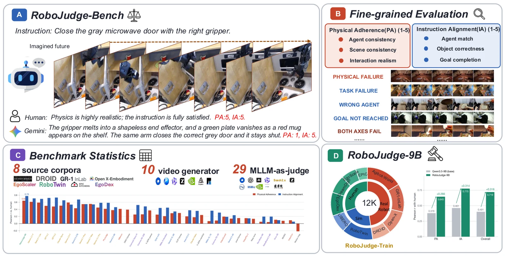

Physically strong, partially aligned
Instruction: Sort the cotton swab containers and white packages from the two white rectangular containers into the blue tray on the table in the warehouse with the right gripper.
PA 5/5IA 3/5
Human-aligned evaluation of physical adherence and instruction alignment in generated embodied videos.

Representative RoboJudge-Bench examples spanning complementary PA/IA outcomes. Videos load only when played.
Instruction: Sort the cotton swab containers and white packages from the two white rectangular containers into the blue tray on the table in the warehouse with the right gripper.
Instruction: Crack the brown egg with your right hand over the black frying pan.
Instruction: Pick the dark glass from the wooden table and place it into the gray woven basket with the right gripper.
Two complementary axes separate whether a rollout is physically believable from whether it performs the requested task.
Does the generated rollout obey the physical and temporal constraints of the scene?
Does the rollout preserve the intended agent, manipulate the correct object, and achieve the goal?
Full-parameter language-model training with the vision tower and multimodal projector frozen, using the released PA and IA rationales.
Multimodal GRPO with a schema-aware ordinal reward for exact and adjacent PA/IA score agreement.
Top 10 model judges ranked by pooled Overall Pearson correlation on the same 800-video benchmark.
| Rank | Judge | PA r | IA r | Overall r |
|---|---|---|---|---|
| 1 | RoboJudge-9B OURS | 0.645 | 0.775 | 0.719 |
| 2 | Gemini-3.7-Flash CLOSED | 0.611 | 0.709 | 0.630 |
| 3 | GPT-5.2 CLOSED | 0.499 | 0.722 | 0.626 |
| 4 | Seed-2.1-Lite CLOSED | 0.590 | 0.694 | 0.619 |
| 5 | GPT-5.5 CLOSED | 0.489 | 0.733 | 0.618 |
| 6 | Claude-Opus-4.8 CLOSED | 0.505 | 0.655 | 0.587 |
| 7 | Qwen3.5-27B OPEN | 0.431 | 0.676 | 0.573 |
| 8 | Gemini-3.5-Flash CLOSED | 0.594 | 0.535 | 0.562 |
| 9 | Qwen3.7-Plus CLOSED | 0.548 | 0.546 | 0.538 |
| 10 | Qwen3.7-Max CLOSED | 0.553 | 0.539 | 0.537 |
| 11 | Gemini-3.1-Pro CLOSED | 0.451 | 0.584 | 0.529 |
| 12 | PhyJudge-9B JUDGE | 0.417 | 0.585 | 0.489 |
| 13 | Qwen3.5-9B OPEN | 0.379 | 0.461 | 0.401 |
| 14 | Cosmos3-Nano-Reasoner EMBODIED | 0.256 | 0.524 | 0.369 |
| 15 | Cosmos-Reason2-32B EMBODIED | 0.261 | 0.484 | 0.369 |
| 16 | GLM-4.6V-Flash OPEN | 0.253 | 0.440 | 0.356 |
| 17 | MiMo-Embodied-7B EMBODIED | 0.209 | 0.447 | 0.304 |
| 18 | Qwen3-VL-8B OPEN | 0.292 | 0.341 | 0.295 |
| 19 | Claude-Haiku-4.5 CLOSED | 0.179 | 0.357 | 0.278 |
| 20 | InternVL3.5-38B OPEN | 0.204 | 0.375 | 0.271 |
| 21 | MiMo-VL-7B OPEN | 0.069 | 0.362 | 0.237 |
| 22 | Cosmos-Reason2-2B EMBODIED | 0.085 | 0.309 | 0.205 |
| 23 | VideoScore2-8B JUDGE | 0.195 | 0.191 | 0.202 |
| 24 | RynnBrain-1.1-9B EMBODIED | 0.051 | 0.196 | 0.129 |
| 25 | RoboBrain2.5-8B EMBODIED | 0.042 | 0.197 | 0.122 |
| 26 | VideoPhy2-7B JUDGE | 0.152 | 0.147 | 0.103 |
| 27 | Qwen3.5-4B OPEN | 0.139 | 0.235 | 0.101 |
| 28 | VideoCon-7B JUDGE | 0.095 | 0.055 | 0.077 |
| 29 | Orca-4B EMBODIED | 0.108 | 0.096 | 0.059 |
| — | WBench-30B-A3B JUDGE | 0.412 | — | — |
+0.089 overall Pearson r over Gemini-3.7-Flash.